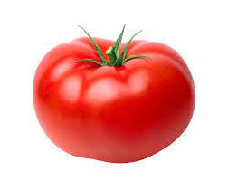
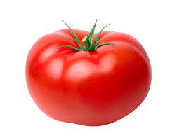

Welcome to Farm Fresh, where freshness meets convenience!
Nestled in the heart of Durbanville, our farm is dedicated to providing you with the freshest,most flavorful organic produce straight from our fields to your table.
Fruits and vegetables are rich in essential nutrients such as vitamins,
minerals, fiber,
and antioxidants. These nutrients are vital for various bodily functions,
including metabolism, immune function, and cell repair.
Fruits and vegetables
are typically low in calories and high in fiber, making them filling and
satisfying while providing essential nutrients.
Incorporating plenty of fruits and vegetables into your diet can help you feel
full on fewer calories, making it easier to maintain a healthy weight.
 
